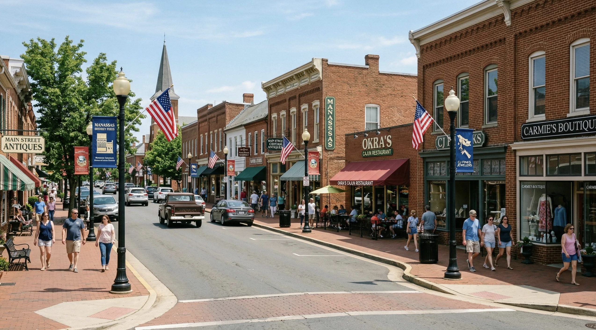

Updated October 2026 | Complete 2027 Relocation Planning Guide
Are you thinking about moving to Manassas, Virginia in 2027?
Manassas is one of Northern Virginia's most interesting places to consider for a relocation. Known for its historic downtown, established residential communities, commuter rail access, and proximity to major employment centers, the Manassas area offers a combination of suburban living and regional convenience.
Whether you're purchasing your first home, relocating into a larger single-family property, renting an apartment, or moving closer to work, understanding the local housing market and moving requirements can help you make informed decisions.
At Haul Bros Moving Co LLC, we help homeowners, renters, families, military personnel, and businesses relocate throughout Manassas, Manassas Park, Bristow, Gainesville, Haymarket, Centreville, Woodbridge, and surrounding Northern Virginia communities.
This complete 2027 guide covers neighborhoods, home prices, rent, schools, transportation, local attractions, moving costs, and everything you should consider before relocating to Manassas.
Quick Answer: Is Manassas, VA a Good Place to Live in 2027?
Manassas can be a good choice for people looking for a variety of housing options, historic downtown amenities, commuter rail connections, and access to western Northern Virginia.
The area includes apartments, condominiums, townhouses, established single-family neighborhoods, and larger detached homes.
However, affordability, commuting, schools, and local services vary significantly by address.
Important: The independent City of Manassas, the independent City of Manassas Park, and nearby Prince William County communities with Manassas mailing addresses are separate jurisdictions.
This distinction affects school districts, property taxes, and government services.
Manassas, VA at a Glance
| Category | Details |
|---|---|
| Location | Northern Virginia |
| Jurisdictions | City of Manassas and surrounding Prince William County; nearby Manassas Park is separate |
| Common ZIP codes | 20110, 20109, 20111, 20112 |
| Housing | Apartments, condos, townhouses, detached homes |
| Typical home value, Manassas area | Approximately $547,070, September 2026 |
| Typical home value, Manassas City geography | Approximately $481,776, September 2026 |
| Median advertised listing price, broader Manassas market | Approximately $590,000, September 2026 |
| Zillow observed average rent, broader Manassas market | Approximately $2,135/month, September 2026 |
| Schools | Manassas City Public Schools or Prince William County Public Schools, depending on address |
| Transportation | VRE Manassas Line, OmniRide, I-66, Route 28, Route 234 |
| Nearby communities | Bristow, Gainesville, Haymarket, Centreville, Manassas Park |
| Attractions | Historic Downtown Manassas, Manassas Museum, Manassas National Battlefield Park |
Housing statistics are published 2026 indicators, not guaranteed 2027 prices. The geographic boundaries and methodologies of different housing data providers may vary.
1. Where Is Manassas, Virginia?
Manassas is located in Northern Virginia, southwest of Washington, DC.
The independent City of Manassas is surrounded by Prince William County, while the neighboring City of Manassas Park is a separate independent city.
Many properties outside Manassas City limits still use a Manassas mailing address.
Nearby Communities
Manassas Park: A separate city adjacent to Manassas, with its own local government and school division.
Bristow: A residential area west of Manassas featuring established neighborhoods and newer housing developments.
Gainesville: Located farther west, with shopping destinations, detached homes, and townhouse communities.
Haymarket: Offers residential communities and access to the Interstate 66 corridor.
Centreville: Located east of Manassas in Fairfax County, providing connections toward Fairfax and Washington, DC.
Woodbridge: Located southeast of Manassas, with residential neighborhoods and access to Interstate 95.
Why the Exact Address Matters
Two homes with Manassas mailing addresses may fall under different school systems, tax authorities, and public-service providers.
Before purchasing or renting, verify the jurisdiction using the property's official address and parcel information.
2. Best Neighborhoods and Communities in Manassas, VA
Manassas offers a variety of residential environments, from historic neighborhoods to newer suburban communities.
Historic Downtown Manassas
Historic Downtown Manassas is known for its restaurants, local businesses, historic architecture, and commuter rail station.
Why consider it?
- Walkable downtown amenities in certain areas.
- Historic neighborhood character.
- Access to restaurants and shops.
- VRE commuter rail service.
Moving considerations: Older properties, narrower streets, and limited parking may require additional planning.
Georgetown South
Georgetown South is an established townhouse community in the City of Manassas.
Why consider it?
- Townhouse housing options.
- Proximity to city services.
- Access to nearby shopping and transportation corridors.
Moving considerations: Confirm parking rules, loading space, and any applicable community restrictions.
Sumner Lake
Sumner Lake is a residential community in the Manassas area featuring detached homes and community amenities.
Why consider it?
- Established residential setting.
- Single-family housing options.
- Access to regional roads.
Moving considerations: Review HOA requirements, driveway access, and furniture inventory.
Wellington
Wellington is a residential community within the City of Manassas area, with a mix of housing styles.
Why consider it?
- Townhouse and detached-home options.
- Established community amenities.
- Convenient access to local services.
Moving considerations: Multiple floors and neighborhood parking arrangements can affect loading and unloading.
West Gate
West Gate is an established residential area in the broader Manassas community.
Why consider it?
- Different housing types.
- Access to shopping and transportation.
- Opportunities to compare properties at varying price points.
Moving considerations: Confirm whether the exact property is located in Prince William County and review parking access.
Yorkshire
Yorkshire is a residential community in the Manassas area with established homes and access to Route 28.
Why consider it?
- Detached-home options.
- Established residential surroundings.
- Connections to Centreville and nearby employment centers.
Moving considerations: Evaluate driveway access, property layout, and truck placement.
How to Choose the Right Neighborhood
Compare the exact properties based on:
- Purchase or rental price.
- School assignments.
- Property taxes.
- HOA fees.
- Commute.
- Parking.
- Property condition.
- Nearby amenities.
No single neighborhood is ideal for every household.
3. How Much Do Homes Cost in Manassas, VA?
Housing prices vary considerably between Manassas City and surrounding Prince William County communities.
Published 2026 Housing Indicators
| Market Indicator | Reported Value | Reporting Period |
|---|---|---|
| Zillow typical home value — broader Manassas market | $547,070 | September 2026 |
| Zillow typical home value — Manassas City geography | $481,776 | September 2026 |
| Redfin median home sale price — Manassas | $490,951 | September 2026 |
| Realtor.com median listing price — broader Manassas market | $590,000 | September 2026 |
These are different measures and geographic definitions. A typical home value is not the same as a median sale or listing price.
What Affects Home Prices?
- Neighborhood and jurisdiction.
- Property size.
- Lot size.
- Age and condition.
- Renovations.
- Garage and parking.
- School assignment.
- Community amenities.
- Available inventory.
Housing Types Available
Condominiums: May offer lower-maintenance living, but association fees and building rules matter.
Townhouses: Often provide multiple levels and attached or nearby parking.
Detached homes: Offer a variety of lot sizes, layouts, and storage options.
Larger suburban homes: Found throughout the surrounding Manassas area, including portions of Prince William County.
2027 Homebuyer Tip
Review current comparable sales, mortgage costs, insurance, taxes, and HOA fees before making a purchase decision.
Published 2026 figures should be treated as historical reference points, not predictions of 2027 home values.
4. How Much Does It Cost to Rent in Manassas?
Manassas offers rental apartments, townhouses, condominiums, and detached homes.
According to September 2026 housing reports:
- Zillow's observed average asking rent for the broader Manassas market was approximately $2,135 per month.
- Zillow's corresponding figure for its Manassas City geography was approximately $2,139 per month.
- Realtor.com's median advertised rent for its broader Manassas market was approximately $2,800 per month.
These figures use different methodologies and should not be compared as identical measurements.
Additional Rental Expenses
Before signing a lease, ask about:
- Security deposits.
- Parking charges.
- Pet fees.
- Utilities.
- Application fees.
- Storage fees.
- Move-in scheduling requirements.
- Elevator reservations.
- Insurance requirements.
Renting an Apartment vs. Townhouse
Apartments may require building-specific moving reservations.
Townhouses can involve stairs, limited curbside parking, and larger furniture inventories.
Both property types benefit from advance planning.
5. Cost of Living in Manassas, VA
Housing is one of the largest expenses associated with living in Manassas.
Other household expenses may include transportation, utilities, insurance, childcare, groceries, and property maintenance.
Property Taxes
Manassas City, Manassas Park, and Prince William County have separate taxing authorities.
The applicable tax rates depend on the property's jurisdiction.
A Manassas mailing address does not necessarily mean a property is taxed by the City of Manassas.
HOA and Condominium Fees
Some residential communities charge recurring association fees.
These may cover common-area maintenance, shared amenities, landscaping, or building operations.
Transportation Costs
Commuters should consider:
- Fuel.
- Vehicle maintenance.
- Parking.
- Express-lane tolls where applicable.
- VRE fares.
- Bus fares.
Home Maintenance
Detached homes may involve additional expenses for landscaping, exterior maintenance, HVAC systems, and repairs.
6. Schools and Education in Manassas, Virginia
School assignments depend on the exact property location.
Manassas City Public Schools
The City of Manassas operates its own public school division.
Schools include:
- Osbourn High School.
- Metz Middle School.
- Mayfield Intermediate School.
- Baldwin Elementary School.
- Haydon Elementary School.
- Round Elementary School.
- Weems Elementary School.
School configurations and attendance boundaries should be verified through Manassas City Public Schools.
Prince William County Public Schools
Properties with Manassas mailing addresses outside city limits may be served by Prince William County Public Schools.
Schools serving the broader area vary by address.
Manassas Park City Schools
Manassas Park operates a separate school division.
Important Reminder
Never assume a school's assignment based only on a ZIP code or neighborhood name.
Use the relevant school division's official address-based locator or contact the school division directly.
7. Commuting From Manassas to Washington, DC, Fairfax & Arlington
Transportation is a major consideration for people moving to Manassas.
Interstate 66
Interstate 66 connects the broader Manassas area with Fairfax County, Arlington, and Washington, DC.
Traffic conditions can vary significantly during peak hours.
Route 28
Route 28 provides access toward Centreville, Chantilly, and the Dulles corridor.
Route 234
Route 234 and the Prince William Parkway connect Manassas with surrounding parts of Prince William County.
Virginia Railway Express
The VRE Manassas Line offers commuter rail service toward Alexandria, Crystal City, and Washington, DC.
Manassas Station is located at:
9451 West Street, Manassas, VA 20110.
The station provides access to commuter rail and local transportation connections.
OmniRide
OmniRide operates regional commuter and local bus services in the Prince William County area.
Routes and schedules should be checked before relying on a particular service.
Does Manassas Have a Metro Station?
Manassas does not have a Metrorail station.
Residents may use VRE, bus services, or drive to Metro stations in other communities.
Commuting Advice
Test your commute during the actual hours you expect to travel.
A route that appears convenient on a weekend may take significantly longer during weekday rush hour.
8. Things to Do in Manassas, VA
Manassas offers historic attractions, shopping, recreation, and community events.
Historic Downtown Manassas
Downtown Manassas features local restaurants, shops, and historic buildings.
It is also home to the historic train depot and visitor center.
Manassas Museum
The Manassas Museum explores the city's history through exhibits and educational programming.
Manassas National Battlefield Park
Located in the surrounding Prince William County area, the park preserves significant Civil War battlefields.
Visitors can explore trails, exhibits, and historical sites.
Liberia House
Liberia House is a historic property associated with Civil War history.
The grounds offer opportunities for walking and learning about the area's past.
Manassas Mall
Manassas Mall provides shopping, dining, and entertainment options in the broader Manassas area.
SplashDown Waterpark
SplashDown Waterpark is a seasonal recreational attraction in Prince William County.
Check current operating dates and admission information before visiting.
9. Is Manassas, VA a Good Place for Families?
Manassas offers a range of housing types, recreational amenities, and educational options.
However, the best fit depends on a family's individual needs.
Housing Options
Families can compare apartments, townhouses, and detached homes across different neighborhoods.
Schools
Verify the correct school division and address-specific assignments.
Recreation
Local parks, community programs, museums, and nearby attractions offer opportunities for activities.
Commuting
Consider travel times to work, childcare, school, and extracurricular activities.
Household Budget
Include housing, taxes, utilities, insurance, transportation, and childcare when evaluating affordability.
10. Moving to Manassas From Woodbridge, Gainesville, Fairfax & Alexandria
Moving requirements depend on the starting property, destination, and household inventory.
Moving From Woodbridge to Manassas
Plan for travel, truck access, stairs, and the total furniture inventory.
Moving From Gainesville to Manassas
Even a shorter relocation can involve several hours of packing, loading, transportation, and unloading.
Moving From Fairfax to Manassas
Consider traffic along Interstate 66 and other regional routes.
Moving From Alexandria to Manassas
Apartment or condominium moves may require elevator reservations, loading docks, and insurance documentation.
Moving From Arlington to Manassas
Confirm high-rise building access, parking, and scheduled loading windows.
Moving From Centreville to Manassas
Review townhouse staircases, furniture dimensions, and parking access before moving day.
11. How Much Do Movers Cost in Manassas, VA?
At Haul Bros Moving Co LLC, we offer the following standard moving packages for qualifying local moves.
Standard Haul Bros Moving Rates
| Moving Package | First 2 Hours | Additional Hour |
|---|---|---|
| 2 Movers + Truck | $395 | $159 |
| 3 Movers + Truck | $495 | $189 |
| 4 Movers + Truck | $695 | $249 |
| 2 Movers — Labor Only | $295 | $125 |
A two-hour minimum applies.
These are Haul Bros' standard company rates, not independently measured averages for all Manassas moving companies.
Actual pricing depends on the agreed scope, moving time, property access, inventory, and any separately quoted services.
Example 1: One-Bedroom Apartment Move
Assume two movers and a truck complete a local move in four hours.
- First two hours: $395.
- Two additional hours: $318.
Illustrative total: $713.
Example 2: Three-Bedroom Townhouse Move
Assume three movers and a truck complete the move in six hours.
- First two hours: $495.
- Four additional hours: $756.
Illustrative total: $1,251.
Example 3: Larger Single-Family Home Move
Assume four movers and a truck complete the move in eight hours.
- First two hours: $695.
- Six additional hours: $1,494.
Illustrative total: $2,189.
These examples assume one truck package, the stated duration, and no separately quoted services.
Large inventories may require additional transportation capacity, crew members, or time.
What Affects Moving Costs?
- Number of bedrooms.
- Furniture and box inventory.
- Stairs and elevators.
- Truck parking.
- Long carrying distances.
- Travel time.
- Packing requirements.
- Specialty items.
- Additional truckloads.
- Property access delays.
For qualifying local moves, Haul Bros does not charge separate standard fuel, stair, elevator, or routine equipment fees. Additional working time and separately quoted services may still affect the final cost.
12. Moving Into a Manassas Townhouse
Townhouses are common throughout the broader Manassas area.
They can present challenges involving stairs, narrow turns, and parking.
Townhouse Moving Checklist
- Measure staircases and doorways.
- Confirm parking rules.
- Review HOA requirements.
- Label boxes by floor.
- Identify large furniture.
- Plan furniture disassembly when appropriate.
- Reserve loading areas if required.
Larger sectionals, bed frames, and dressers should be discussed before moving day. Read our townhouse moving guide.
13. Moving Into a Single-Family Home in Manassas
Detached homes may involve larger furniture inventories, garages, outdoor items, and multiple levels.
Before Moving Day
- Prepare a detailed inventory.
- Identify heavy furniture.
- Measure oversized items.
- Confirm driveway access.
- Label rooms.
- Discuss furniture protection.
- Plan loading and unloading arrangements.
For larger households, a virtual or in-person inventory assessment can help determine appropriate crew and truck requirements.
14. Packing Services and Furniture Protection for Manassas Moves
Packing can be one of the most time-consuming parts of relocating.
Haul Bros Moving Co LLC offers packing and unpacking assistance for qualifying moves.
Common Packing Needs
- Kitchen items.
- Bedrooms.
- Home offices.
- Fragile belongings.
- Furniture wrapping.
- Box labeling.
- Unpacking assistance.
Standard Furniture Protection
Depending on the agreed moving package, protection may include:
- Moving blankets.
- Shrink wrap for suitable furniture.
- Dollies.
- Basic floor protection.
- Routine furniture disassembly and reassembly.
Specialty Items
Pianos, antiques, artwork, glass furniture, and unusually heavy items may require additional evaluation or specialist handling.
Discuss these items before scheduling and review applicable valuation coverage.
15. Best Time of Year to Move to Manassas
The ideal moving date depends on your schedule, housing arrangements, and weather preferences.
Spring
Spring may offer comfortable temperatures, although rain is possible.
Summer
Summer is a common moving season for households coordinating school and work schedules.
Fall
Fall can offer favorable temperatures for loading and unloading.
Winter
Winter moves require additional attention to snow, ice, road conditions, and shorter daylight hours.
Weekday or Weekend?
Consider building restrictions, work schedules, moving-company availability, and applicable pricing differences.
16. Complete 2027 Moving to Manassas Checklist
Six to Eight Weeks Before Moving
- Confirm your new address.
- Verify the correct jurisdiction.
- Research moving companies.
- Prepare a furniture inventory.
- Review HOA requirements.
- Request estimates.
- Begin decluttering.
Four Weeks Before Moving
- Reserve your moving date.
- Arrange packing supplies.
- Schedule utilities.
- Confirm parking.
- Begin packing nonessential belongings.
Two Weeks Before Moving
- Confirm your moving crew.
- Label boxes by room.
- Arrange elevator access if needed.
- Prepare important documents.
- Identify specialty items.
One Week Before Moving
- Complete most packing.
- Confirm the arrival window.
- Review your estimate.
- Prepare an essentials bag.
- Check weather conditions.
Moving Day
- Keep walkways clear.
- Protect sensitive surfaces.
- Keep children and pets away from loading areas.
- Direct furniture placement.
- Inspect both properties.
After Moving
- Update your mailing address.
- Confirm utilities.
- Register for local services as needed.
- Update vehicle and other records as required.
- Review trash and recycling schedules.
- Explore your new neighborhood.
17. Frequently Asked Questions About Moving to Manassas, VA
1. Is Manassas, VA a good place to live?
Manassas offers historic downtown amenities, different housing options, commuter rail access, and proximity to regional employment centers. The right fit depends on your budget and lifestyle.
2. Is Manassas in Prince William County?
The independent City of Manassas is separate from Prince William County. However, many nearby Prince William County properties use Manassas mailing addresses.
3. Is Manassas Park the same as Manassas?
No. Manassas Park is a separate independent city.
4. How much do homes cost in Manassas?
Zillow reported a typical home value of approximately $547,070 for its broader Manassas market in September 2026. Its Manassas City geography reported approximately $481,776.
5. How much is rent in Manassas?
Zillow's September 2026 observed average rent for the broader Manassas market was approximately $2,135 per month. Actual rents vary.
6. What are popular Manassas neighborhoods?
Historic Downtown Manassas, Georgetown South, Sumner Lake, Wellington, West Gate, and Yorkshire are among the communities worth researching.
7. Does Manassas have a train station?
Yes. The Manassas VRE station provides commuter rail service on the Manassas Line.
8. Does Manassas have a Metro station?
No. Manassas does not have a Metrorail station.
9. What schools serve Manassas?
Manassas City Public Schools serves city properties. Prince William County Public Schools serves many surrounding Manassas-address properties, while Manassas Park has its own school division.
10. Is Manassas good for families?
Manassas offers residential neighborhoods, parks, and educational options. Families should evaluate specific properties and school assignments.
11. How much do movers cost in Manassas?
Haul Bros' standard two-mover truck package starts at $395 for the first two hours and $159 per additional hour.
12. How much do three movers cost?
Haul Bros' standard three-mover truck package starts at $495 for the first two hours and $189 per additional hour.
13. How much do four movers cost?
Haul Bros' standard four-mover truck package starts at $695 for the first two hours and $249 per additional hour.
14. Does Haul Bros offer labor-only moving?
Yes. The standard two-mover labor-only package costs $295 for the first two hours and $125 per additional hour.
15. Can Haul Bros move me from Woodbridge to Manassas?
Yes. Haul Bros serves Woodbridge, Manassas, and surrounding Northern Virginia communities.
16. Does Haul Bros provide packing services?
Yes. Packing and unpacking assistance is available for qualifying moves.
17. Can movers help with Manassas townhouses?
Yes. Haul Bros provides townhouse moving services, including loading, unloading, and qualifying furniture disassembly and reassembly.
18. Do Manassas apartments require elevator reservations?
Some do. Confirm building requirements before scheduling.
19. Are there extra charges for stairs?
For qualifying standard local moving packages, Haul Bros does not charge a separate standard stair fee. Additional working time may affect the total.
20. How do I get a moving quote in Manassas?
Provide your moving date, pickup and delivery addresses, home size, inventory, access information, and requested services.
18. Why Choose Haul Bros Moving Co LLC for Your Manassas Move?
Moving into a Manassas apartment, townhouse, condominium, or detached home requires planning and organized furniture handling.
Haul Bros Moving Co LLC is a Woodbridge-based moving company serving Manassas and surrounding Northern Virginia communities.
Our Services
- Local residential moving.
- Apartment moving.
- Townhouse moving.
- Single-family home moving.
- Packing and unpacking.
- Labor-only loading and unloading.
- Furniture disassembly and reassembly.
- Storage-related moving.
- Senior moving.
- Military moving assistance.
- Commercial and office moving.
- Junk removal.
What's Included in Our Standard Local Moving Packages?
Depending on the agreed package:
- Professional moving crew.
- Moving truck.
- Furniture blankets.
- Shrink wrap for suitable furniture.
- Dollies and routine moving equipment.
- Basic floor protection.
- Qualifying furniture disassembly and reassembly.
- Loading and unloading.
For qualifying local moves, there are no separate standard fuel, stair, elevator, or routine equipment fees.
Additional time and separately quoted services may affect the final price.
Available Discounts
Eligible military members, seniors, and students may qualify for a 5% discount, subject to applicable terms.
Our Approach
We focus on careful preparation, clear communication, organized loading, and responsible furniture handling.
For larger inventories or unusual access conditions, we recommend reviewing the move details in advance.
19. Get a Free Moving Quote in Manassas, VA
Are you planning to move to Manassas from Woodbridge, Gainesville, Bristow, Haymarket, Centreville, Fairfax, Alexandria, Arlington, or another Northern Virginia community?
Whether you're relocating into an apartment, townhouse, detached home, or condominium, Haul Bros Moving Co LLC can help you plan your move.
Contact Haul Bros Moving Co LLC
Haul Bros Moving Co LLC
Relocating made easy.
Phone: (571) 899-1919
Email: info@haulbrosmoving.com
Website: www.haulbrosmoving.com
USDOT: 4497497
Request Your Personalized Moving Estimate
Please provide:
- Preferred moving date.
- Full pickup address.
- Full delivery address.
- Home size.
- Furniture and box inventory.
- Number of floors.
- Stairs or elevator information.
- Truck parking and access.
- Specialty items.
- Packing or unpacking requirements.
Our team can review your information and discuss an appropriate moving package.
Contact Haul Bros Moving Co LLC today for a free, personalized moving estimate in Manassas, VA.
Final Thoughts: Is Moving to Manassas Worth It?
Manassas offers historic charm, residential variety, shopping, parks, and access to regional transportation.
However, housing costs, school assignments, taxes, and local services depend heavily on the property's exact location.
Before relocating, compare neighborhoods, review current housing data, verify the jurisdiction, and prepare a realistic moving budget.
Whether you're moving into a downtown apartment, a townhouse, or a larger single-family home, careful preparation can make your transition easier.
Haul Bros Moving Co LLC — Relocating made easy.
Housing figures reflect published 2026 indicators, not forecasts of 2027 prices. Moving examples are illustrative calculations based on Haul Bros' stated standard rates. Actual quotes depend on the agreed scope of services.